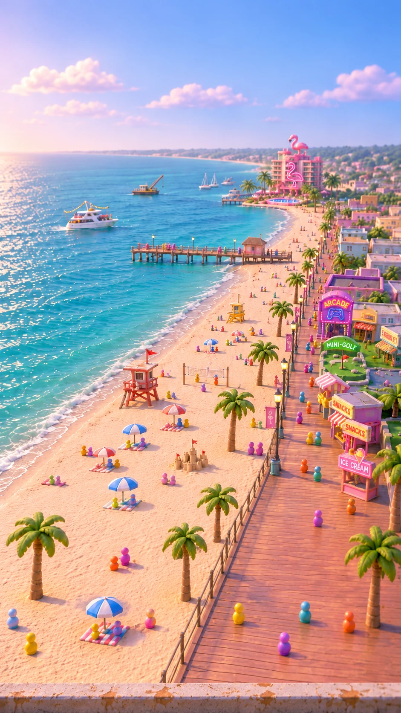

Grey-box camera match ▾
Concept overlay
Lens (vert. fov)
Boardwalk width
Fly around
Sunset
Lens changes re-cast the layout so it still sits on the painting; watch how deep the map gets. Scope stops: drag to aim, scroll or pinch to step.